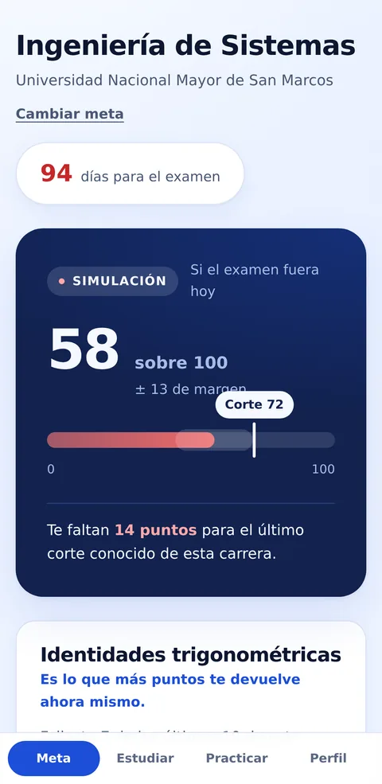
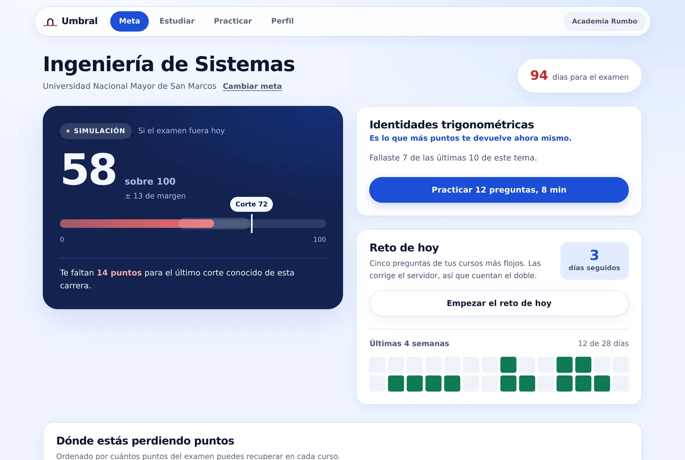
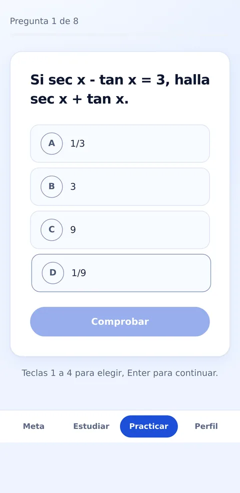
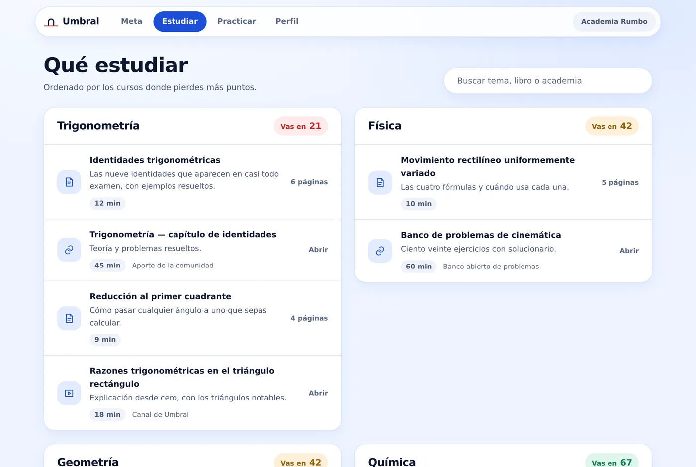
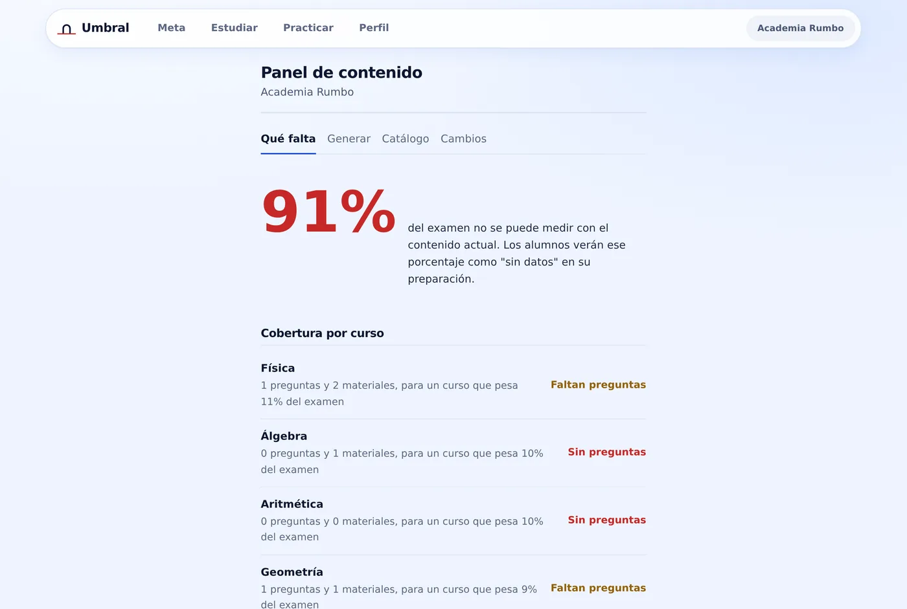

Uno
Eliges tu meta
Universidad y carrera. Cada una pesa los cursos distinto: trigonometría vale nueve puntos del examen en Ingeniería de Sistemas y no entra en Derecho. Todo el diagnóstico se recalcula.

Preparación medida, no estimada
Estudias todos los días y nadie te dice si alcanza. Umbral mide tu preparación contra el puntaje de corte de tu carrera, y te dice exactamente dónde estás perdiendo puntos.

Lo que sabes hoy
Lo que necesitas saber
Uno
Universidad y carrera. Cada una pesa los cursos distinto: trigonometría vale nueve puntos del examen en Ingeniería de Sistemas y no entra en Derecho. Todo el diagnóstico se recalcula.

Dos
Cada respuesta ajusta la estimación. Lo reciente pesa más que lo de marzo, y acertar una difícil informa más que acertar una fácil. Si fallas, la explicación va del paso que fallaste, no de la respuesta correcta.

Tres
El material no se ordena por carpetas: se ordena por cuántos puntos te devuelve. El curso que más te cuesta va primero, con tu nivel al lado.

Para academias
Umbral no reemplaza tu material: lo convierte en diagnóstico. El panel te dice qué parte del examen tu catálogo todavía no puede medir, y qué temas tienen preguntas pero ningún material donde estudiar.

Cuatro cosas que se descartaron a propósito. Están en esta lista porque cada una hace que el número deje de ser cierto.
Un segundo número, falso, que sube con solo abrir la aplicación. Compite con el real y gana, porque es más fácil de mover.
Damos una estimación con su margen a la vista. Adivinar el resultado destruye en una frase la honestidad de todo lo demás.
El público es mayoritariamente menor de edad. Sin moderación, sin reportar y sin bloquear, es un riesgo que no vale la pena.
Si todavía no te hemos visto resolver lo suficiente, decimos que no sabemos. Un 61 inventado se cobra el día del examen.
Averigua hoy cuántos puntos te separan.
Entrar con mi código¿Tu academia todavía no usa Umbral? Escríbenos a hola@umbral.pe